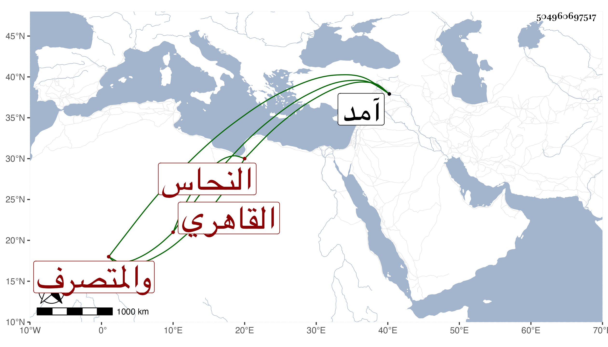

0902Sakhawi.DawLamic.ITO20230111-ara1.EIS1600.504960697517
Biography ID: 504960697517
641
قاسم بن محمد بن محمد بن محمد بن علي القاهري النحاس والمتصرف بباب شيخنا كأبيه في كليهما ووالد أبي الحسن الآتي ويعرف بابن المرضعة . ممن كان في خدمة ابن شيخنا بحيث حج معه وجاور بل سافر مع والده في سنة آمد تاجرا وكان عاميا متميزا في طريقته . مات بعد أن أضر في ثامن عشر شوال سنة ثلاث وتسعين عن ست وثمانين سنة ودفن بالقرب من ضريح الست زينب خارج باب النصر عفا الله عنه .
